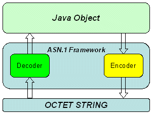
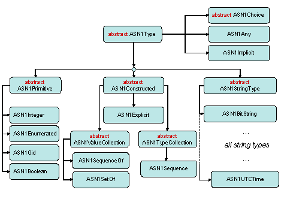
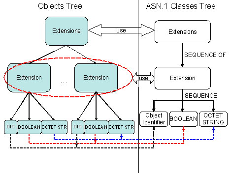

|
|

|
|
|
| ||||||||||||||||||||||||||||||||||||||||||||||||||||||||||||||||||||||||||||||||||||||||
|
|
ASN.1 FrameworkMapping between ASN.1 and Java Types Revision History
About This DocumentPurposeThis document introduces the ASN.1 (Abstract Syntax Notation) framework delivered as part of the Harmony classlibrary. This document provides an overview of ASN.1 types and encoding rules with focus on the characteristics of the current implementation. The document gives details on the framework design and provides an overall description of the ASN.1 package. Intended AudienceThe target audience for the document includes a wide community of engineers interested in using ASN.1 and in further work with the product to contribute to its development. The document assumes that readers are familiar with the ASN.1 notation and the Java* programming language. Documentation ConventionsThis document uses the unified conventions for the Harmony documentation kit. Introduction to ASN.1AboutASN.1 (Abstract Syntax Notation One) is an international standard of notation used to specify data structures with a high level of abstraction, which is reflected in the ASN.1 specification [2]. ASN.1 is fully platform- and language-independent. ASN.1 goes with the encoding rules, which determine how to represent a value of an abstract type as a string of octets [3]. The Java* API specification [1] employs ASN.1 in the following ways:
To learn more about ASN.1, you can use online documentation [4], [5], and publications [6], [7]. ASN.1 Basic TypesASN.1 has the following basic types:
These types are used to specify a wide range of other abstract types, as shown in Example 1. This example is based on RFC 3280 [8].
Extensions ::= SEQUENCE SIZE (1..MAX) OF Extension
Extension ::= SEQUENCE {
extnID OBJECT IDENTIFIER,
critical BOOLEAN DEFAULT FALSE,
extnValue OCTET STRING
}
Version ::= INTEGER { v1(0), v2(1), v3(2) }
In this example, the basic ASN.1 types ASN.1 Framework in HarmonyThis section part of the document describes the ASN.1 framework as a whole, defines the mapping principles to establish the correspondence between ASN.1 and Java* types, and represents the hierarchy of ASN.1 types representation in the current framework. AboutThe ASN.1 framework provides a common, easy and efficient approach for working with ASN.1 basic types, notations and encoding rules. This framework can be described as a layer between a Java* object and its ASN.1 encoded form, as shown in Figure 1.  Figure 1: ASN.1 Framework Layer The Harmony ASN.1 framework is characterized by:
The framework enables the following:
Note The current ASN.1 framework is a partial implementation of the ASN.1 and encoding rules specifications. This framework covers certain ASN.1 basic types and basic encoding rules (BER), and provides most restrictions employed by the distinguished encoding rules (DER). Mapping between ASN.1 and Java* TypesThe framework maps all ASN.1 abstract types and notations to Java* primitive types or Java* classes. The notations in Example 1 can be represented as the following Java* classes:
public class Extension {
private String extnID;
private boolean critical;
private byte extnValue[];
}
public class Extensions {
// contains elements of Extension class
private List extensions;
}
The The table below describes the default mapping ASN.1 types to Java* types, and indicates the class providing the specified mapping in the current framework.
Harmony ASN.1 Classes
Basic ASN.1 types are in the  Figure 2: Class Hierarchy The subsequent sections provide as short description of the classes included in the package.
Encoding Rules
Encoding rules specify how to represent an ASN.1 type as a sequence of octets. ASN.1
encoding rules are represented in the
Encoding
Encoding an object is the process of extracting all required information
from an object and storing it in a sequence of octets according to the specified
ASN.1 notation and encoding rules. The common encoding functionality is implemented
in the The encoding of data for each ASN.1 type includes:
DER Encoding In contrast to BER, DER enables using only the definite form of length encoding. That is why, before encoding an ASN.1 type value, the ASN.1 framework must obtain the length of the value. This requirement determines the whole process of DER encoding: to calculate the length of a constructed ASN.1 type, the framework calculates lengths of its components, which can also be constructed, and so on. DER encoding goes in the following stages:
DecodingDecoding or verifying the provided encoded form is a sequential process of parsing strings of octets according to the specified ASN.1 notation and encoding rules.
An iteration of decoding an ASN.1 type includes decoding its tag, length, and content
octets. The class Implementing ASN.1 NotationsBasic ClassesIn the current framework, the basic classes meet the following requirements:
Custom Classes
Classes from the Two approaches for implementing custom ASN.1 classes are available. Custom classes can be designed as singleton Java* classes or not. The choice depends on further use of the class decoder. The singleton approach is not efficient when decoding only one Java* object. However, for decoding a series of encodings (for example, with an application server), the singleton approach is rather effective because only one reusable decoder instance exists. Creating a new decoder object for each decoded or encoded Java* object leads to performance penalties. To implement the singleton approach, a custom ASN.1 class must meet the following requirements:
Example 3
This example illustrates the singleton approach to static instances of ASN.1 custom
classes for the
class Extensions {
// instance of decoder/encoder
public static final ASN1SequenceOf ASN1 =
new ASN1SequenceOf(Extension.ASN1);
private List extensions;
}
class Extension {
// instance of decoder/encoder
public static final ASN1Sequence ASN1 =
new ASN1Sequence(new ASN1Type[] {
ASN1Oid.getInstance(), // extnID
ASN1Boolean.getInstance(), // critical
ASN1OctetString.getInstance()}) { // extnValue
// replace constructor
{
// set default value for critical field
// first parameter - a default value
// second parameter - an index of ASN.1 type in a sequence starting with 0
setDefault(Boolean.FALSE, 1);
}
};
private String extnID;
private boolean critical;
private byte extnValue[];
}
The
The Figure 3 displays the correspondence between the application object tree and the object tree of ASN.1 custom classes.  Figure 3: Java Object and ASN.1 Custom Class Trees Appendix: Usage ExamplesThis section demonstrates the usage of the ASN.1 framework. ASN.1 Boolean
An abstract type can be defined as MyBooleanType ::= BOOLEAN; Then the following code can be used to decode and encode values of this type:
// represents encoded ASN.1 Boolean type: false value
byte encoding[] = new byte[] {0x01, 0x01, 0x00};
// get instance of ASN.1 Boolean decoder/encoder
ASN1Type asn1 = ASN1Boolean.getInstance();
// decoded value is Boolean.FALSE
Boolean value = (Boolean)asn1.decode(encoding);
// encode Boolean.TRUE value
// an array value equals to {0x01, 0x01, 0xFF}
byte enc[] = asn1.encode(Boolean.TRUE);
ASN.1 Tagged TypesThe following ASN.1 notation can be used to define a tagged type: MyTaggedType ::= [APPLICATION 0] EXPLICIT BOOLEAN;
By default, a tagged type, Then the following code can be used to decode and encode the values of this type:
// represents encoded explicitly tagged ASN.1 Boolean type: false value
byte encoding[] = new byte[] {0x60, 0x03, 0x01, 0x01, 0x00};
// create an instance of custom decoder/encoder for tagged type
ASN1Type asn1 = new ASN1Explicit(
ASN1Constants.CLASS_APPLICATION, // tagging class
0, // tag number
ASN1Boolean.getInstance() // type to be tagged
);
// decoded value is Boolean.FALSE
Boolean value = (Boolean)asn1.decode(encoding);
// encode Boolean.TRUE value as explicitly tagged
// an array value equals to {0x60, 0x03,0x01, 0x01, 0xFF}
byte enc[] = asn1.encode(Boolean.TRUE);
ASN.1 Sequence TypeA constructed ASN.1 type notation can go as follows.
MyConstructedType ::= SEQUENCE {
classVersion INTEGER,
isExtendable BOOLEAN DEFAULT FALSE
}
By default, a sequence type is mapped to an array of objects. In the example, it
is an array of two objects: the first object represents The following code can be used to decode and encode the values of this type:
// create an instance custom decoder/encoder
ASN1Type asn1 =
new ASN1Sequence(new ASN1Type[] {ASN1Integer.getInstance(), // classVersion
ASN1Boolean.getInstance()}) { // isExtendable
// replace constructor
{
// set default value for isExtendable field
// first parameter - a default value
// second parameter - an index of ASN.1 type in a sequence starting with 0
setDefault(Boolean.FALSE, 1);
}
};
// decoded sequence value is mapped to array of objects
Object value[] = (Object[])asn1.decode(someEncoding);
// first value (ASN.1 Integer) is mapped by default to an array of bytes
byte version[] = (byte[])value[0];
// second value (ASN.1 Boolean) is mapped by default to a Boolean object
Boolean isCritical = (Boolean)value[1];
When it is necessary to change the default mapping of an array of objects for the
ASN.1
// class for storing MyConstructedType values
class A {
int version;
boolean isExtendable;
}
// create an instance custom decoder/encoder
ASN1Type asn1 =
new ASN1Sequence(new ASN1Type[] {ASN1Integer.getInstance(), // classVersion
ASN1Boolean.getInstance()}) { // isExtendable
// replace constructor
{
// set default value for isExtendable field
// first parameter - a default value
// second parameter - an index of ASN.1 type in a sequence starting with 0
setDefault(Boolean.FALSE, 1);
}
// for decoding
public Object getDecodedObject(BerInputStream in) throws IOException {
Object values[] = (Object[])in.content;
A a = new A();
// array of bytes to primitive int value
a.version = (new BigInteger((byte[])value[0])).intValue;
// Boolean object to primitive boolean
a.isExtendable = ((Boolean)value[1]).booleanValue();
return a;
}
// for encoding
public void getValues(Object object, Object values[]) {
A a = (A)object;
// primitive int value to array of bytes
values[0] = BigInteger.valueOf(a.version).toByteArray();
// primitive boolean value to Boolean object
values[1] = Boolean.valueOf(a.isCritical);
}
};
// decoded sequence value is mapped to custom A class
A a1 = (A)asn1.decode(someEncoding);
// encode an instance of A class
A a2 = new A();
a2.version = 5;
a2.isExtendable = true;
byte enc[] = asn1.encode(a);
References[1] Java API Specification, http://java.sun.com/j2se/1.5.0/docs/api/ [2] Abstract Syntax Notation One (ASN.1) Specification of Basic Notation ITU-T Rec. X.680 (2002) | ISO/IEC 8824-1:2002 [3] Specification of Basic Encoding Rules (BER), Canonical Encoding Rules (CER) and Distinguished Encoding Rules (DER) ITU-T Rec. X.690 (2002) | ISO/IEC 8825-1:2002 [4] ASN.1 Information Site, http://asn1.elibel.tm.fr/en/standards/index.htm [5] A Layman's Guide to a Subset of ASN.1, BER, and DER, http://luca.ntop.org/Teaching/Appunti/asn1.html [6] Olivier Dubuisson, translated by Philippe Fouquart, ASN.1 - Communication between heterogeneous systems, http://www.oss.com/asn1/dubuisson.html [7] Professor John Larmouth, ASN.1 Complete, http://www.oss.com/asn1/larmouth.html [8] The Internet Engineering Task Force, Requests for Comments, http://www.ietf.org/ * Other brands and names are the property of their respective owners. |
|||||||||||||||||||||||||||||||||||||||||||||||||||||||||||||||||||||||||||||||||||||||
|
| ||||||||||||||||||||||||||||||||||||||||||||||||||||||||||||||||||||||||||||||||||||||||
|
Copyright © 2003-2007, The Apache Software Foundation
| ||||||||||||||||||||||||||||||||||||||||||||||||||||||||||||||||||||||||||||||||||||||||